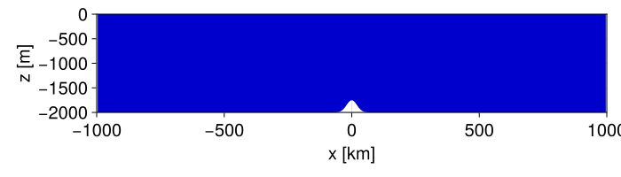
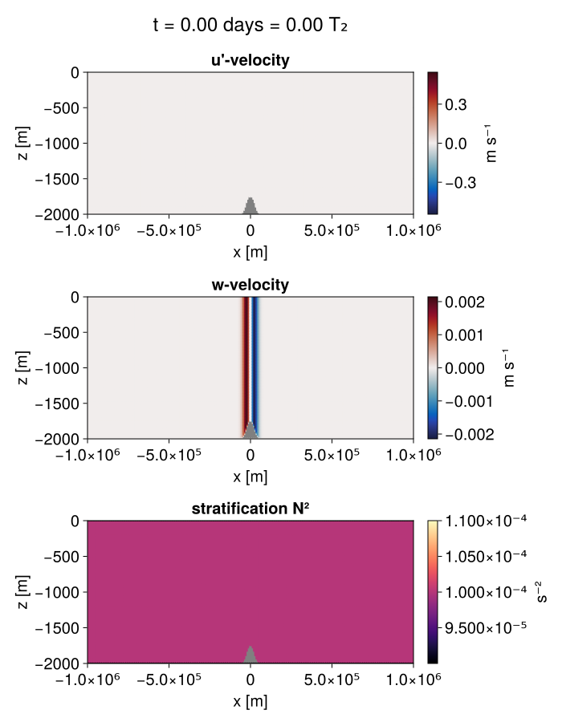

Internal tide over a seamount
In this example, we show how internal tide is generated from a barotropic tidal flow sloshing back and forth over a sea mount.
Install dependencies
First let's make sure we have all required packages installed.
using Pkg
pkg"add Oceananigans, CairoMakie"using Oceananigans
using Oceananigans.UnitsGrid
We create an ImmersedBoundaryGrid wrapped around an underlying two-dimensional RectilinearGrid that is periodic in $x$ and bounded in $z$.
Nx, Nz = 256, 128
H, L = 2kilometers, 1000kilometers
underlying_grid = RectilinearGrid(size = (Nx, Nz), halo = (4, 4),
x = (-L, L), z = (-H, 0),
topology = (Periodic, Flat, Bounded))256×1×128 RectilinearGrid{Float64, Periodic, Flat, Bounded} on CPU with 4×0×4 halo
├── Periodic x ∈ [-1.0e6, 1.0e6) regularly spaced with Δx=7812.5
├── Flat y
└── Bounded z ∈ [-2000.0, 0.0] regularly spaced with Δz=15.625Now we can create the non-trivial bathymetry. We use GridFittedBottom that gets as input either (i) a two-dimensional function whose arguments are the grid's native horizontal coordinates and it returns the $z$ of the bottom, or (ii) a two-dimensional array with the values of $z$ at the bottom cell centers.
In this example we'd like to have a Gaussian hill at the center of the domain.
\[h(x) = -H + h_0 \exp(-x^2 / 2σ^2)\]
h₀ = 250meters
width = 20kilometers
hill(x) = h₀ * exp(-x^2 / 2width^2)
bottom(x) = - H + hill(x)
grid = ImmersedBoundaryGrid(underlying_grid, PartialCellBottom(bottom))256×1×128 ImmersedBoundaryGrid{Float64, Periodic, Flat, Bounded} on CPU with 4×0×4 halo:
├── immersed_boundary: PartialCellBottom(mean(zb)=-1993.92, min(zb)=-2000.0, max(zb)=-1754.72, ϵ=0.2)
├── underlying_grid: 256×1×128 RectilinearGrid{Float64, Periodic, Flat, Bounded} on CPU with 4×0×4 halo
├── Periodic x ∈ [-1.0e6, 1.0e6) regularly spaced with Δx=7812.5
├── Flat y
└── Bounded z ∈ [-2000.0, 0.0] regularly spaced with Δz=15.625Let's see how the domain with the bathymetry is.
x = xnodes(grid, Center())
bottom_boundary = interior(grid.immersed_boundary.bottom_height, :, 1, 1)
top_boundary = 0 * x
using CairoMakie
fig = Figure(size = (700, 200))
ax = Axis(fig[1, 1],
xlabel="x [km]",
ylabel="z [m]",
limits=((-grid.Lx/2e3, grid.Lx/2e3), (-grid.Lz, 0)))
band!(ax, x/1e3, bottom_boundary, top_boundary, color = :mediumblue)
fig
Now we want to add a barotropic tide forcing. For example, to add the lunar semi-diurnal $M_2$ tide we need to add forcing in the $u$-momentum equation of the form:
\[F_0 \sin(\omega_2 t)\]
where $\omega_2 = 2π / T_2$, with $T_2 = 12.421 \,\mathrm{hours}$ the period of the $M_2$ tide.
The excursion parameter is a nondimensional number that expresses the ratio of the flow movement due to the tide compared to the size of the width of the hill.
\[\epsilon = \frac{U_{\mathrm{tidal}} / \omega_2}{\sigma}\]
We prescribe the excursion parameter which, in turn, implies a tidal velocity $U_{\mathrm{tidal}}$ which then allows us to determing the tidal forcing amplitude $F_0$. For the last step, we use Fourier decomposition on the inviscid, linearized momentum equations to determine the flow response for a given tidal forcing. Doing so we get that for the sinusoidal forcing above, the tidal velocity and tidal forcing amplitudes are related via:
\[U_{\mathrm{tidal}} = \frac{\omega_2}{\omega_2^2 - f^2} F_0\]
Now we have the way to find the value of the tidal forcing amplitude that would correspond to a given excursion parameter. The Coriolis frequency is needed, so we start by constructing a Coriolis on an $f$-plane at the mid-latitudes.
coriolis = FPlane(latitude = -45)FPlane{Float64}(f=-0.000103126)Now we have everything we require to construct the tidal forcing given a value of the excursion parameter.
T₂ = 12.421hours
ω₂ = 2π / T₂ # radians/sec
ϵ = 0.1 # excursion parameter
U₂ = ϵ * ω₂ * width
A₂ = U₂ * (ω₂^2 - coriolis.f^2) / ω₂
@inline tidal_forcing(x, z, t, p) = p.A₂ * sin(p.ω₂ * t)
u_forcing = Forcing(tidal_forcing, parameters=(; A₂, ω₂))ContinuousForcing{@NamedTuple{A₂::Float64, ω₂::Float64}}
├── func: tidal_forcing (generic function with 1 method)
├── parameters: (A₂ = 1.8218611749508242e-5, ω₂ = 0.00014051439111137024)
└── field dependencies: ()Model
We built a HydrostaticFreeSurfaceModel:
model = HydrostaticFreeSurfaceModel(; grid, coriolis,
buoyancy = BuoyancyTracer(),
tracers = :b,
momentum_advection = WENO(),
tracer_advection = WENO(),
forcing = (; u = u_forcing))HydrostaticFreeSurfaceModel{CPU, ImmersedBoundaryGrid}(time = 0 seconds, iteration = 0)
├── grid: 256×1×128 ImmersedBoundaryGrid{Float64, Periodic, Flat, Bounded} on CPU with 4×0×4 halo
├── timestepper: QuasiAdamsBashforth2TimeStepper
├── tracers: b
├── closure: Nothing
├── buoyancy: BuoyancyTracer with ĝ = NegativeZDirection()
├── free surface: SplitExplicitFreeSurface with gravitational acceleration 9.80665 m s⁻²
│ └── substepping: FixedTimeStepSize(39.049 seconds)
├── advection scheme:
│ ├── momentum: WENO{3, Float64, Float32}(order=5)
│ └── b: WENO{3, Float64, Float32}(order=5)
├── vertical_coordinate: ZCoordinate
└── coriolis: FPlane{Float64}We initialize the model with the tidal flow and a linear stratification.
Nᵢ² = 1e-4 # [s⁻²] initial buoyancy frequency / stratification
bᵢ(x, z) = Nᵢ² * z
set!(model, u=U₂, b=bᵢ)Now let's build a Simulation.
Δt = 5minutes
stop_time = 4days
simulation = Simulation(model; Δt, stop_time)Simulation of HydrostaticFreeSurfaceModel{CPU, ImmersedBoundaryGrid}(time = 0 seconds, iteration = 0)
├── Next time step: 5 minutes
├── run_wall_time: 0 seconds
├── run_wall_time / iteration: NaN days
├── stop_time: 4 days
├── stop_iteration: Inf
├── wall_time_limit: Inf
├── minimum_relative_step: 0.0
├── callbacks: OrderedDict with 4 entries:
│ ├── stop_time_exceeded => Callback of stop_time_exceeded on IterationInterval(1)
│ ├── stop_iteration_exceeded => Callback of stop_iteration_exceeded on IterationInterval(1)
│ ├── wall_time_limit_exceeded => Callback of wall_time_limit_exceeded on IterationInterval(1)
│ └── nan_checker => Callback of NaNChecker for u on IterationInterval(100)
└── output_writers: OrderedDict with no entriesWe add a callback to print a message about how the simulation is going,
using Printf
wall_clock = Ref(time_ns())
function progress(sim)
elapsed = 1e-9 * (time_ns() - wall_clock[])
msg = @sprintf("Iter: %d, time: %s, wall time: %s, max|w|: %6.3e, m s⁻¹\n",
iteration(sim), prettytime(sim), prettytime(elapsed),
maximum(abs, sim.model.velocities.w))
wall_clock[] = time_ns()
@info msg
return nothing
end
add_callback!(simulation, progress, name=:progress, IterationInterval(200))Diagnostics/Output
Add some diagnostics. Instead of $u$ we save the deviation of $u$ from its instantaneous domain average, $u' = u - (L_x H)^{-1} \int u \, \mathrm{d}x \mathrm{d}z$. We also save the stratification $N^2 = \partial_z b$.
b = model.tracers.b
u, v, w = model.velocities
U = Field(Average(u))
u′ = u - U
N² = ∂z(b)
filename = "internal_tide"
save_fields_interval = 30minutes
simulation.output_writers[:fields] = JLD2Writer(model, (; u, u′, w, b, N²); filename,
schedule = TimeInterval(save_fields_interval),
overwrite_existing = true)JLD2Writer scheduled on TimeInterval(30 minutes):
├── filepath: internal_tide.jld2
├── 5 outputs: (u, u′, w, b, N²)
├── array_type: Array{Float32}
├── including: [:grid, :coriolis, :buoyancy, :closure]
├── file_splitting: NoFileSplitting
└── file size: 71.0 KiBWe are ready – let's run!
run!(simulation)[ Info: Initializing simulation...
[ Info: Iter: 0, time: 0 seconds, wall time: 43.852 seconds, max|w|: 2.089e-03, m s⁻¹
[ Info: ... simulation initialization complete (9.753 seconds)
[ Info: Executing initial time step...
[ Info: ... initial time step complete (4.725 seconds).
[ Info: Iter: 200, time: 16.667 hours, wall time: 9.360 seconds, max|w|: 5.068e-03, m s⁻¹
[ Info: Iter: 400, time: 1.389 days, wall time: 2.629 seconds, max|w|: 5.142e-03, m s⁻¹
[ Info: Iter: 600, time: 2.083 days, wall time: 2.668 seconds, max|w|: 1.964e-03, m s⁻¹
[ Info: Iter: 800, time: 2.778 days, wall time: 2.688 seconds, max|w|: 4.267e-03, m s⁻¹
[ Info: Iter: 1000, time: 3.472 days, wall time: 2.623 seconds, max|w|: 3.553e-03, m s⁻¹
[ Info: Simulation is stopping after running for 29.998 seconds.
[ Info: Simulation time 4 days equals or exceeds stop time 4 days.
Load output
First, we load the saved velocities and stratification output as FieldTimeSerieses.
saved_output_filename = filename * ".jld2"
u′_t = FieldTimeSeries(saved_output_filename, "u′")
w_t = FieldTimeSeries(saved_output_filename, "w")
N²_t = FieldTimeSeries(saved_output_filename, "N²")
umax = maximum(abs, u′_t[end])
wmax = maximum(abs, w_t[end])
times = u′_t.timesVisualize
Now we can visualize our resutls! We use CairoMakie here. On a system with OpenGL using GLMakie is more convenient as figures will be displayed on the screen.
We use Makie's Observable to animate the data. To dive into how Observables work we refer to Makie.jl's Documentation.
using CairoMakie
n = Observable(1)
title = @lift @sprintf("t = %1.2f days = %1.2f T₂",
round(times[$n] / day, digits=2) , round(times[$n] / T₂, digits=2))
u′ₙ = @lift u′_t[$n]
wₙ = @lift w_t[$n]
N²ₙ = @lift N²_t[$n]
axis_kwargs = (xlabel = "x [m]",
ylabel = "z [m]",
limits = ((-grid.Lx/2, grid.Lx/2), (-grid.Lz, 0)),
titlesize = 20)
fig = Figure(size = (700, 900))
fig[1, :] = Label(fig, title, fontsize=24, tellwidth=false)
ax_u = Axis(fig[2, 1]; title = "u'-velocity", axis_kwargs...)
hm_u = heatmap!(ax_u, u′ₙ; nan_color=:gray, colorrange=(-umax, umax), colormap=:balance)
Colorbar(fig[2, 2], hm_u, label = "m s⁻¹")
ax_w = Axis(fig[3, 1]; title = "w-velocity", axis_kwargs...)
hm_w = heatmap!(ax_w, wₙ; nan_color=:gray, colorrange=(-wmax, wmax), colormap=:balance)
Colorbar(fig[3, 2], hm_w, label = "m s⁻¹")
ax_N² = Axis(fig[4, 1]; title = "stratification N²", axis_kwargs...)
hm_N² = heatmap!(ax_N², N²ₙ; nan_color=:gray, colorrange=(0.9Nᵢ², 1.1Nᵢ²), colormap=:magma)
Colorbar(fig[4, 2], hm_N², label = "s⁻²")
fig
Finally, we can record a movie.
@info "Making an animation from saved data..."
frames = 1:length(times)
record(fig, filename * ".mp4", frames, framerate=16) do i
@info string("Plotting frame ", i, " of ", frames[end])
n[] = i
end[ Info: Making an animation from saved data...
[ Info: Plotting frame 1 of 193
[ Info: Plotting frame 2 of 193
[ Info: Plotting frame 3 of 193
[ Info: Plotting frame 4 of 193
[ Info: Plotting frame 5 of 193
[ Info: Plotting frame 6 of 193
[ Info: Plotting frame 7 of 193
[ Info: Plotting frame 8 of 193
[ Info: Plotting frame 9 of 193
[ Info: Plotting frame 10 of 193
[ Info: Plotting frame 11 of 193
[ Info: Plotting frame 12 of 193
[ Info: Plotting frame 13 of 193
[ Info: Plotting frame 14 of 193
[ Info: Plotting frame 15 of 193
[ Info: Plotting frame 16 of 193
[ Info: Plotting frame 17 of 193
[ Info: Plotting frame 18 of 193
[ Info: Plotting frame 19 of 193
[ Info: Plotting frame 20 of 193
[ Info: Plotting frame 21 of 193
[ Info: Plotting frame 22 of 193
[ Info: Plotting frame 23 of 193
[ Info: Plotting frame 24 of 193
[ Info: Plotting frame 25 of 193
[ Info: Plotting frame 26 of 193
[ Info: Plotting frame 27 of 193
[ Info: Plotting frame 28 of 193
[ Info: Plotting frame 29 of 193
[ Info: Plotting frame 30 of 193
[ Info: Plotting frame 31 of 193
[ Info: Plotting frame 32 of 193
[ Info: Plotting frame 33 of 193
[ Info: Plotting frame 34 of 193
[ Info: Plotting frame 35 of 193
[ Info: Plotting frame 36 of 193
[ Info: Plotting frame 37 of 193
[ Info: Plotting frame 38 of 193
[ Info: Plotting frame 39 of 193
[ Info: Plotting frame 40 of 193
[ Info: Plotting frame 41 of 193
[ Info: Plotting frame 42 of 193
[ Info: Plotting frame 43 of 193
[ Info: Plotting frame 44 of 193
[ Info: Plotting frame 45 of 193
[ Info: Plotting frame 46 of 193
[ Info: Plotting frame 47 of 193
[ Info: Plotting frame 48 of 193
[ Info: Plotting frame 49 of 193
[ Info: Plotting frame 50 of 193
[ Info: Plotting frame 51 of 193
[ Info: Plotting frame 52 of 193
[ Info: Plotting frame 53 of 193
[ Info: Plotting frame 54 of 193
[ Info: Plotting frame 55 of 193
[ Info: Plotting frame 56 of 193
[ Info: Plotting frame 57 of 193
[ Info: Plotting frame 58 of 193
[ Info: Plotting frame 59 of 193
[ Info: Plotting frame 60 of 193
[ Info: Plotting frame 61 of 193
[ Info: Plotting frame 62 of 193
[ Info: Plotting frame 63 of 193
[ Info: Plotting frame 64 of 193
[ Info: Plotting frame 65 of 193
[ Info: Plotting frame 66 of 193
[ Info: Plotting frame 67 of 193
[ Info: Plotting frame 68 of 193
[ Info: Plotting frame 69 of 193
[ Info: Plotting frame 70 of 193
[ Info: Plotting frame 71 of 193
[ Info: Plotting frame 72 of 193
[ Info: Plotting frame 73 of 193
[ Info: Plotting frame 74 of 193
[ Info: Plotting frame 75 of 193
[ Info: Plotting frame 76 of 193
[ Info: Plotting frame 77 of 193
[ Info: Plotting frame 78 of 193
[ Info: Plotting frame 79 of 193
[ Info: Plotting frame 80 of 193
[ Info: Plotting frame 81 of 193
[ Info: Plotting frame 82 of 193
[ Info: Plotting frame 83 of 193
[ Info: Plotting frame 84 of 193
[ Info: Plotting frame 85 of 193
[ Info: Plotting frame 86 of 193
[ Info: Plotting frame 87 of 193
[ Info: Plotting frame 88 of 193
[ Info: Plotting frame 89 of 193
[ Info: Plotting frame 90 of 193
[ Info: Plotting frame 91 of 193
[ Info: Plotting frame 92 of 193
[ Info: Plotting frame 93 of 193
[ Info: Plotting frame 94 of 193
[ Info: Plotting frame 95 of 193
[ Info: Plotting frame 96 of 193
[ Info: Plotting frame 97 of 193
[ Info: Plotting frame 98 of 193
[ Info: Plotting frame 99 of 193
[ Info: Plotting frame 100 of 193
[ Info: Plotting frame 101 of 193
[ Info: Plotting frame 102 of 193
[ Info: Plotting frame 103 of 193
[ Info: Plotting frame 104 of 193
[ Info: Plotting frame 105 of 193
[ Info: Plotting frame 106 of 193
[ Info: Plotting frame 107 of 193
[ Info: Plotting frame 108 of 193
[ Info: Plotting frame 109 of 193
[ Info: Plotting frame 110 of 193
[ Info: Plotting frame 111 of 193
[ Info: Plotting frame 112 of 193
[ Info: Plotting frame 113 of 193
[ Info: Plotting frame 114 of 193
[ Info: Plotting frame 115 of 193
[ Info: Plotting frame 116 of 193
[ Info: Plotting frame 117 of 193
[ Info: Plotting frame 118 of 193
[ Info: Plotting frame 119 of 193
[ Info: Plotting frame 120 of 193
[ Info: Plotting frame 121 of 193
[ Info: Plotting frame 122 of 193
[ Info: Plotting frame 123 of 193
[ Info: Plotting frame 124 of 193
[ Info: Plotting frame 125 of 193
[ Info: Plotting frame 126 of 193
[ Info: Plotting frame 127 of 193
[ Info: Plotting frame 128 of 193
[ Info: Plotting frame 129 of 193
[ Info: Plotting frame 130 of 193
[ Info: Plotting frame 131 of 193
[ Info: Plotting frame 132 of 193
[ Info: Plotting frame 133 of 193
[ Info: Plotting frame 134 of 193
[ Info: Plotting frame 135 of 193
[ Info: Plotting frame 136 of 193
[ Info: Plotting frame 137 of 193
[ Info: Plotting frame 138 of 193
[ Info: Plotting frame 139 of 193
[ Info: Plotting frame 140 of 193
[ Info: Plotting frame 141 of 193
[ Info: Plotting frame 142 of 193
[ Info: Plotting frame 143 of 193
[ Info: Plotting frame 144 of 193
[ Info: Plotting frame 145 of 193
[ Info: Plotting frame 146 of 193
[ Info: Plotting frame 147 of 193
[ Info: Plotting frame 148 of 193
[ Info: Plotting frame 149 of 193
[ Info: Plotting frame 150 of 193
[ Info: Plotting frame 151 of 193
[ Info: Plotting frame 152 of 193
[ Info: Plotting frame 153 of 193
[ Info: Plotting frame 154 of 193
[ Info: Plotting frame 155 of 193
[ Info: Plotting frame 156 of 193
[ Info: Plotting frame 157 of 193
[ Info: Plotting frame 158 of 193
[ Info: Plotting frame 159 of 193
[ Info: Plotting frame 160 of 193
[ Info: Plotting frame 161 of 193
[ Info: Plotting frame 162 of 193
[ Info: Plotting frame 163 of 193
[ Info: Plotting frame 164 of 193
[ Info: Plotting frame 165 of 193
[ Info: Plotting frame 166 of 193
[ Info: Plotting frame 167 of 193
[ Info: Plotting frame 168 of 193
[ Info: Plotting frame 169 of 193
[ Info: Plotting frame 170 of 193
[ Info: Plotting frame 171 of 193
[ Info: Plotting frame 172 of 193
[ Info: Plotting frame 173 of 193
[ Info: Plotting frame 174 of 193
[ Info: Plotting frame 175 of 193
[ Info: Plotting frame 176 of 193
[ Info: Plotting frame 177 of 193
[ Info: Plotting frame 178 of 193
[ Info: Plotting frame 179 of 193
[ Info: Plotting frame 180 of 193
[ Info: Plotting frame 181 of 193
[ Info: Plotting frame 182 of 193
[ Info: Plotting frame 183 of 193
[ Info: Plotting frame 184 of 193
[ Info: Plotting frame 185 of 193
[ Info: Plotting frame 186 of 193
[ Info: Plotting frame 187 of 193
[ Info: Plotting frame 188 of 193
[ Info: Plotting frame 189 of 193
[ Info: Plotting frame 190 of 193
[ Info: Plotting frame 191 of 193
[ Info: Plotting frame 192 of 193
[ Info: Plotting frame 193 of 193
This page was generated using Literate.jl.